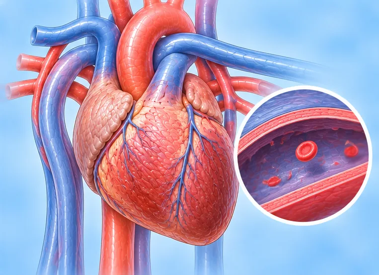

Chest
279 conditions and symptoms
 Abdominal aortic aneurysm
Abdominal aortic aneurysm Abnormal ECG
Abnormal ECG Active lung tuberculosis (TB)
Active lung tuberculosis (TB) Acute breast infection (mastitis)
Acute breast infection (mastitis) Acute bronchitis
Acute bronchitis Acute coronary syndrome
Acute coronary syndrome Acute myocarditis (inflamed heart muscle)
Acute myocarditis (inflamed heart muscle)- Acute pericarditis (inflamed heart sac)
 Acute respiratory failure
Acute respiratory failure Adenovirus pneumonia
Adenovirus pneumonia Allergic lung inflammation
Allergic lung inflammation- Aneurysm
- Angina (heart-related chest pain)
- Aortic aneurysm
 Aortic atherosclerosis
Aortic atherosclerosis- Aortic dissection
 Aortic valve insufficiency
Aortic valve insufficiency- Aortic valve stenosis
 Arterial blockage (arterial embolism)
Arterial blockage (arterial embolism)- Arteriosclerosis obliterans (blocked arteries)
 Arteriovenous fistula (AV fistula)
Arteriovenous fistula (AV fistula)- Aspiration pneumonia
- Asthma
- Atrial fibrillation
- Atrial flutter
- Atrial tachycardia
 Bacterial infection
Bacterial infection- Bacterial pneumonia
- Barrel chest
 Benign lung tumour
Benign lung tumour- Blocked heart blood vessels
- Blocked leg arteries (arteriosclerosis obliterans)
- Breast adenosis
 Breast cancer
Breast cancer- Breast cyst
- Breast duct ectasia
- Breast duct tumour
- Breast fibroadenoma
- Breast lump
- Breast lump or nodule
- Breast lumpiness (fibrocystic changes)
- Breast tumour
 Breathlessness or wheezing
Breathlessness or wheezing Broken collarbone
Broken collarbone- Broken heart syndrome (Takotsubo)
- Broken rib
- Bronchial tuberculosis (TB)
- Bronchiectasis
- Bronchitis
- Bronchopneumonia
- Cancer in an accessory breast
- Cardiac asthma (heart-related breathlessness)
- Cardiac myxoma (benign heart tumour)
 Cardiac neurosis (heart-related anxiety)
Cardiac neurosis (heart-related anxiety) Cardiogenic brain embolism (clot from the heart)
Cardiogenic brain embolism (clot from the heart)- Cavitary lung TB (tuberculosis)
 Central lung cancer
Central lung cancer- Chest fullness and pain
- Chest pain
- Chest tightness
- Chest tightness and shortness of breath
- Chest wall tuberculosis
 Chest wall tumour
Chest wall tumour- Chlamydia pneumoniae pneumonia
- Chronic bronchitis
- Chronic cor pulmonale (lung-related heart disease)
- Chronic heart failure
- Chronic respiratory failure
- Chylothorax
- Cold with bacterial infection
- Collapsed lung (pneumothorax)
- Common cold or upper airway infection
- Community-acquired pneumonia
- Complete heart block (third-degree AV block)
 Congenital heart disease
Congenital heart disease- Cor pulmonale (lung-related heart disease)
- Coronary artery spasm
- Coronary heart disease
- Costochondritis (inflamed rib cartilage)
- Cough-variant asthma
- Coughing up blood (haemoptysis)
 COVID-19
COVID-19- Cracked nipples
 Cyst
Cyst- Dilated cardiomyopathy
- Dislocated collarbone joint at the chest
 Dislocated shoulder
Dislocated shoulder- Dislocated shoulder-top joint (AC joint)
- Dry gangrene
- Emphysema
- Endocarditis (inflamed heart lining)
- Enlarged heart (cardiomegaly)
- Extra breast tissue (accessory breast)
 Familial high cholesterol (hypercholesterolaemia)
Familial high cholesterol (hypercholesterolaemia)- Fast heart rate (tachycardia)
- Fibrocystic breast disease
- First-degree heart block (AV block)
- Fluid around the heart (pericardial effusion)
- Fluid in the chest (pleural effusion)
- Fluid in the lungs (pulmonary oedema)
- Fungal lung infection
- Gangrene
- Gynaecomastia (enlarged male breasts)
 H-type hypertension
H-type hypertension- H1N1 influenza A (swine flu)
- Hardened arteries (atherosclerosis)
- Heart and brain blood vessel disease
- Heart attack (past or recent)
- Heart block (atrioventricular block)
- Heart disease
- Heart disease from overactive thyroid
- Heart failure
- Heart muscle strain
- Heart on the right side (dextrocardia)
- Heart palpitations
- Heart rate too fast
- Heart rate too slow
- Heart valve disease
- Hereditary breast and ovarian cancer syndrome (HBOC)
 Hiatus hernia
Hiatus hernia Hiccups
Hiccups- High blood pressure
- High blood pressure (hypertension)
- High blood pressure in older adults
- High diastolic (lower) blood pressure
 High prolactin (hyperprolactinaemia)
High prolactin (hyperprolactinaemia)- Hole in the heart (atrial septal defect)
- Hospital-acquired pneumonia
- Hypertensive heart disease
- Hypertrophic cardiomyopathy (thickened heart muscle)
- Hyperventilation syndrome
- Hypostatic pneumonia
- Idiopathic pulmonary haemosiderosis
- Inflammatory breast cancer
- Influenza B (flu)
- Influenza virus pneumonia
 Intercostal neuralgia (rib nerve pain)
Intercostal neuralgia (rib nerve pain) Intercostal neuritis (inflamed rib nerves)
Intercostal neuritis (inflamed rib nerves)- Interstitial lung disease
- Interstitial pneumonia
- Intraductal papilloma of the breast
- Invasive breast cancer
- Inverted nipple
- Irregular heartbeat
- Ischaemic cardiomyopathy (weakened heart muscle)
- Keshan disease
- Klebsiella pneumonia
- Leaky heart valve (valve regurgitation)
- Left anterior fascicular block
- Left-sided heart failure
- Lobar pneumonia (lung infection)
- Long-lasting cough

Low blood pressure- Lower respiratory tract infection
- Lung abscess
- Lung aspergillosis (fungal infection)
- Lung bulla (large air pocket)
- Lung cancer
- Lung cancer (adenocarcinoma)
 Lung cancer spread to bone (bone metastasis)
Lung cancer spread to bone (bone metastasis)- Lung fibrosis
- Lung nodule
- Lymphangioleiomyomatosis (LAM)
- Male breast cancer
- Malignant pleural effusion (fluid around lung)
- Mastitis (breast inflammation)
 Mastoiditis
Mastoiditis- Metastatic lung tumour (spread from elsewhere)
- Milk leaking from the breasts (galactorrhoea)
- Mitral regurgitation (leaky valve)
- Mitral valve insufficiency
- Mitral valve stenosis
 Mood disorder
Mood disorder- Multiple sebaceous cysts (steatocystoma multiplex)
- Mycoplasma pneumonia
- Myocardial bridge (artery tunnelled in heart muscle)
- Myocarditis (inflamed heart muscle)
 Narrowed oesophagus (stricture)
Narrowed oesophagus (stricture)- Narrowed pulmonary artery (stenosis)
- Needing to sit upright to breathe (orthopnoea)
- Nodule (small lump)
- Non-small cell lung cancer (NSCLC)
 Oesophageal cancer
Oesophageal cancer- Oesophageal tumour
- Oesophagitis (food pipe inflammation)
- Old lung tuberculosis (healed TB)
- Overly large breasts (macromastia)
- Pain around the heart
 Papilloma
Papilloma- Paragonimiasis (lung fluke infection)
- Paroxysmal atrial fibrillation (AF)
- Paroxysmal supraventricular tachycardia (SVT)
- Paroxysmal tachycardia (sudden fast heartbeat)
- Paroxysmal ventricular tachycardia
- Partly collapsed lung (atelectasis)
- Patent ductus arteriosus (PDA)
- Patent foramen ovale (PFO)
- Pericarditis (inflamed heart sac)
- Peripheral lung cancer
- Pleural mesothelioma
- Pleural tumour
- Pleurisy (inflamed lung lining)
- Pneumococcal pneumonia (Streptococcus pneumoniae)
- Pneumoconiosis (lung disease from dust)
- Pneumocystis pneumonia (PCP)
- Pneumonia
- Poor blood flow to the heart muscle (ischaemia)
- Premature atrial beats (PACs)
- Premature heartbeats (extrasystoles)
- Premature ventricular contractions (PVC)
- Primary high blood pressure (essential hypertension)
 Protein-energy malnutrition
Protein-energy malnutrition- Pulmonary cryptococcosis (fungal lung infection)
- Pulmonary embolism (lung blood clot)
- Pulmonary hypertension (high lung artery pressure)
- Pus in the chest (empyema)
- Racing heart with shortness of breath
- Racing or fluttering heart
- Radiation pneumonitis (after radiotherapy)
 Reflux oesophagitis (acid irritating the gullet)
Reflux oesophagitis (acid irritating the gullet)- Renovascular hypertension
- Respiratory failure
- Restrictive cardiomyopathy (stiff heart muscle)
- Rheumatic heart disease
- Rheumatic myocarditis (heart muscle inflammation)
- Right bundle branch block
- Right-sided heart failure
- Sarcoidosis
- Second-degree heart block (AV block)
- Secondary high blood pressure (hypertension)
 Secondary liver tumour (metastases)
Secondary liver tumour (metastases)- Secondary lung TB (tuberculosis)
- Sick sinus syndrome
- Silent coronary heart disease
- Silicosis
- Sinus arrhythmia (irregular heartbeat)
- Sinus bradycardia (slow heartbeat)
- Sinus tachycardia (fast heartbeat)
- Skipped or extra heartbeats
- Slow heart rate (bradycardia)
- Small cell lung cancer
- Spontaneous pneumothorax (collapsed lung)
 Squamous cell lung cancer
Squamous cell lung cancer- Stable angina (heart-related chest pain)
- Staphylococcal pneumonia
- Stubborn high blood pressure (resistant hypertension)
- Superficial phlebitis (vein inflammation)
- Superior vena cava syndrome
- Supraventricular tachycardia (SVT)
- Swelling from fluid retention (oedema)
- Swollen breast lymph nodes
- Swollen legs
- TB pleurisy (tuberculous pleurisy)
- Tetralogy of Fallot
- Thickened heart muscle (hypertrophy)
 Thoracic spine disease (thoracic spondylosis)
Thoracic spine disease (thoracic spondylosis)- Thymoma
- Thymus cancer
- Tobacco or nicotine dependence
- Tracheitis (windpipe inflammation)
- Tricuspid regurgitation (leaky valve)
- Tricuspid valve insufficiency
- Tuberculosis (TB)
- Tuberculosis (TB)
- Underdeveloped breasts (breast hypoplasia)
- Unstable angina
- Variant angina (Prinzmetal's angina)
- Varicose vein ulcer
- Varicose veins in the leg (great saphenous vein)
- Vein inflammation (phlebitis)
- Ventricular aneurysm (bulge in the heart wall)
- Ventricular septal defect (hole in the heart)
- Ventricular tachycardia
- Viral myocarditis (heart muscle inflammation)
- Viral pneumonia
- Whooping cough (pertussis)
- Wide pulse pressure
 Windpipe (tracheal) tumour
Windpipe (tracheal) tumour- Wolff-Parkinson-White (WPW) syndrome